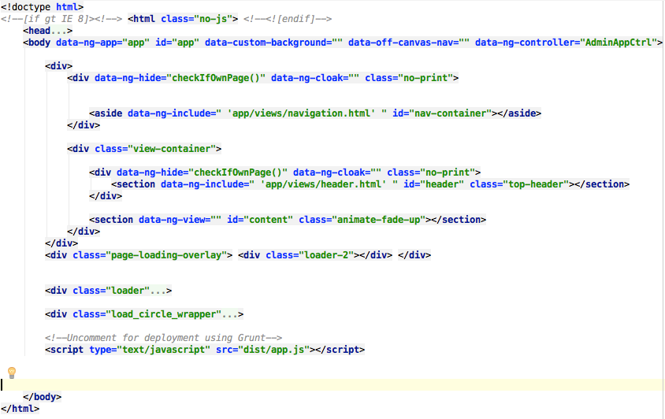

Thank you for buying the theme
To deloy the theme simply put the files into your webserver (ex : www.example.com) and navigate to it through the browser
The theme comes with grunt.js integration so in order to have an optimised installation the recommended way is buy performing the grunt tasks described bellow.
For development purposed javascript files and css files will not be compressed in order to be able to debug and find easily where any issue is.
The theme contains a test grunt task using jshint to go trough the code and find possible issues with the code.
Minified task compresses css files, js files, compiles html templates in to javascript all in order to fully optimize the final application and make it as fast and reliable as possible.
To perform the grunt tasks you will need the following things installed in either your local maching (recommended) or on the webserver, depending where you are performing the tasks. For more information on grunt follow this link : http://gruntjs.com/
1 ) Install node.js on your maching. It provides also installations for all other platforms : http://nodejs.org/download/
On Ubuntu running the sudo apt-get install nodejs might run into problems as the version available in the package manager is not supported. For more info check : http://stackoverflow.com/questions/12913141/installing-from-npm-fails
2 ) Before setting up Grunt ensure that your npm is installed and up-to-date by running npm update -g npm (this might require sudo on certain systems). To install on linux you can run : sudo apt-get install npm
2 ) Install grunt Command line interface (CLI) by following : http://gruntjs.com/getting-started
3 ) make sure all packages are installed by running in your application root folder the following : sudo npm install
4 ) Run the task you want :
This will compile the scripts in the application (app, controllers, directives, services, all extra scripts like all the charting libraries etc) and put them into one single js file and one single css file inside the destination folder in this case "dist".
After that simply push your root files and the dist folder into the webserver and you are done! You have a full compressed and optimized site running.
Files contained in the compressed application :
The application is organized in a way that is easy to fnd and change any script, separating the logic on controllers, directives, services and external libraries.
The HTML templates are also separate using angular-route to map between templates for a more performant and clean structure. Next are described all parts of the application and what to find in each of these parts :

Contians all the main includes, the overall sctructure of the page. Here is where lies the main imports for javscript and css, font, and HTML dom representation. Templates of specific pages are not present here but imported using ng-include
In this folder are included the stylesheets for the application. whenever you want to make changes to the style of the application you can make them here. These files are included to be compressed in the Gruntfile.js where they will be minified and compressed and imported into the "dist" folder.
In this folder are included all external libraries to be used by the theme, angular scripts, jquery, underscore, chartjs and all other libraries are imported from this folder. This folder does not contain app specific files but only external libraries. These files are included to be minified in the Gruntfile.js where they will be minified and compiled togheter with the app specific files into one single javascript file.
This is the folder where all images are stored.
The fonts directory contains fonts for the application. The fonts include the font awesome icons and glyphicons as well as the weather icons.
The app directory is where the Angular app resides. here are all the templates, directives, controllers,main app file and services. The app directory contains 4 javascript files :
It also contains a "views" folder. This folder contains the templates for each view in the app. You can check which view corresponds to each path by looking at the app .config method in the app.js file.
The application includes different libraries to handle the charting and graphs. here will be explained each one and how they are built, how they can be changed or adapted.
Morris charts (http://morrisjs.github.io/morris.js/) is an excelent library for dynamic interactive charts. It contains different charts like :
A special directive and controller was created for morris charts, it makes it very simple to include a chart in a view, provide the data from the controller and make it rendered using a custom directive. The following sample displays a line morris chart :
<div morris-chart data-data="simpleData" data-type="line" data-xkey="year" data-ykeys='["value"]' data labels='["Value"]' data-line-colors='["#2693E9"]' data-line-width="3"></div>
There are like mentioned different types of charts specified here in the data-type attribute :
You can find information on the morris charts data in the controller morrisChartCtrl
Chartjs (http://www.chartjs.org/) is a simple yet effective charting library, easy to use and get started it provides different types of charts based on canvas. It does not provide interaction with the charts but provides a simple and clean way of representing easy data in several types of charts
A special directive and controller was created for chartjs, it makes it very simple to include a chart in a view, provide the data from the controller and make it rendered using a custom directive. The following sample displays a line chartjs chart :
<chart class="chartjs" data-data="chartjsBar" data-type="Bar" value="myChart"></chart>
In the example data is comming from the controller chartjsCtrl in the scope variable chartjsBar
Flotcharts (http://www.flotcharts.org/) is a very complete charting library. it provides simple interactions with the chartings, and very different options and customizations to the charts. There are different types of flotcharts :
In the theme a directive and a controller was created for the flotcharts. The following example represents a chart where data is comming from the flotchart controller and displayed in the flotchart custom directive :
<div data-flot-chart data-data="line1.data" data-options="line1.options" style="width: 100%; height: 300px;"></div>
In the example data is comming from the controller flotChartCtrl in the scope variable line1.data
Easypiecharts (https://github.com/rendro/easy-pie-chart/) provides a way "to draw simple, animated pie charts for single values". It is a simple representation of simple data in a very attractive way and easy to build.
In the theme there is a custom directive and a controller to build easypiecharts like in the following example :
<div easypiechart options="easypie1.options" percent="easypie1.percent" class="easypiechart">
<span class="pie-percent" ng-bind="easypie1.percent"></span>
</div>
<canvas data-gauge-chart data-gauge-data="gauge1.gaugeData" data-gauge-options="gauge1.gaugeOptions" style="width: 220px; height: 110px; "></canvas>
<span data-sparkline data-spark-data="simpleChart1.sparkData" data-spark-options="simpleChart1.sparkOptions"></span>
In the theme there is a single CSS files inside the "styles" folder. In this file "main.css" you can find all the style for the theme including some overrides to bootstrap's default styles.
In the begginig of the file you will find a table of contents containing the main sections of this file.
If you would like to edit a specific section of the site, simply find the appropriate label in the CSS file (style.css), and then scroll down until you find the appropriate style that needs to be edited. For example for changing the default button style :
/************************************
5 - Buttons and Links
*************************************/
.btn {
display: inline-block;
margin-bottom: 0;
font-weight: normal;
text-align: center;
...
The theme includes different libraries for displaying icons. You can find these libraries inside the "fonts" folder in the themes root folder.
The theme includes the glyphicons from bootstrap css for Icon. You can include icons anywhere on the template choosing from the different icons of bootstrap.
<span class="glyphicon glyphicon-asterisk"></span>
You can find all the icons in http://getbootstrap.com/components/
For displaying weather icons the API from http://erikflowers.github.io/weather-icons/ is used. It is a simple easy to use icon font generator that simillar to font awesome displays icons based on a <i> tag.
<i class="wi-day-cloudy-gusts"></i>
You can find all the icons in http://erikflowers.github.io/weather-icons/
The theme includes the fontawesome library for Icon generation. You can include icons anywhere on the template choosing from the great API that is fontawesome.
To include an icon on a page simply add the following class elements to a i tag code (eg: facebook icon) :
<i class="fa fa-facebook fa-2x"></i>
For more information on the API see http://fortawesome.github.io/Font-Awesome/
The theme includes the angular bootstrap ui script. This script provides a lot of functionalities through custom directives and controllers that make it incredibely easy to make use of a lot of elements like :
All this and full documentation for how to use them can be found in http://angular-ui.github.io/bootstrap/
A todo list is something simple, yet very usefull. The admin theme includes a todo list that is saved on the browser cookies. This makes for a simple solution that can handle your everyday todo's in a easy and fast way. It is integrated with toastr for notifications via the service.js file in the app directory.
This todo list is brought throug the script available in https://github.com/1JS/App-todo
You can find the todo in the views folder of the app under "tasks" -> tasks.html. The controller associated with this is the taskCtrl pesent in the file controllers.js
The nested lists is a code sample from https://github.com/JimLiu/angular-ui-tree
It provides a easy way to organize lists inside of eachother, and attaching events to the js code you can actually perform tasks when a list is put inside another.
Here is sample of the HTML in the file nested-lists.html where a controller TreeDemoCtrl is providing the data and populating the tree that is using a template file (also present in this file) to render the HTML.
<div class="page" data-ng-controller="TreeDemoCtrl">
<div class="row">
<div class="col-md-12">
<section class="panel panel-default">
<div class="panel-heading"><strong><i class="fa fa-list panel-ico"></i>Nested Lists</strong></div>
<div class="panel-body">
<div ui-tree="options">
<ol ui-tree-nodes ng-model="list" >
<li ng-repeat="item in list" ui-tree-node ng-include="'items_renderer.html'"></li>
</ol>
</div>
</div>
</section>
</div>
</div>
...
The theme includes several form elements from different sources and for different functions.
These elements are included in different sources, and the files where they are included from are :
On the form validation page there are some controllers making sure some validations are done on the client side before submitting a form. These controllers are :
All these controllers can be found in the file controllers.js